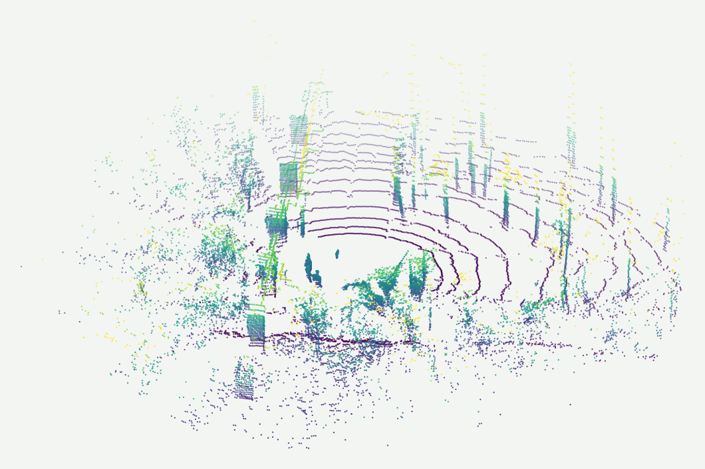

A camera can tell grass from gravel, but it cannot tell how far away either one is, and it goes blind at dusk and in fog. LiDAR gives exact geometry in any light, but on its own a point is just a position and an intensity. Labelling every LiDAR return with a terrain class gives the planner both: where things are and what they are. Tall grass and a fallen log can have the same height profile and need very different decisions.

The classes are chosen by what they mean for driving, not by what the plants are called:
Scans were labelled with voxel labels in MATLAB's Lidar Labeler and exported to per-point labels for training. I expanded the labelled set to 450 scans and split it 70/20/10 into training, validation and test.
I set up three very different point-cloud architectures against the same CAVS data so they could be compared on equal terms:
All three train with AdamW and a one-cycle learning-rate schedule.
| Model | Held-out mIoU | High vegetation IoU |
|---|---|---|
| FRNet, 7 classes, 450 scans | 0.65 | 0.94 |
High vegetation is the easy class: it is large, tall and geometrically distinct. The hard boundaries are the ones that matter most for driving, such as grass versus smooth grass trail and rough trail versus scattered low brush, where geometry barely changes and the label depends on texture that LiDAR samples only coarsely. For review, I rendered colour-coded ground-truth and predicted clouds side by side in MATLAB so mistakes could be traced to specific terrain.
I am also a co-author on CaSSeD, the CAVS Semantic Segmentation Dataset for off-road driving. It pairs 1,077 annotated real camera images from five drives on the CAVS proving ground with 1,947 synthetic image pairs from the MAVS simulator, across six classes: smooth trail, rough trail, small vegetation, forest, sky and obstacles.
Dabbiru, Sharma, Ennin, Goodin, Hudson, Doude, Carruth, Ball. CAVS semantic segmentation dataset for off-road autonomous vehicles. Proc. SPIE 13474, 2025. Dataset page.